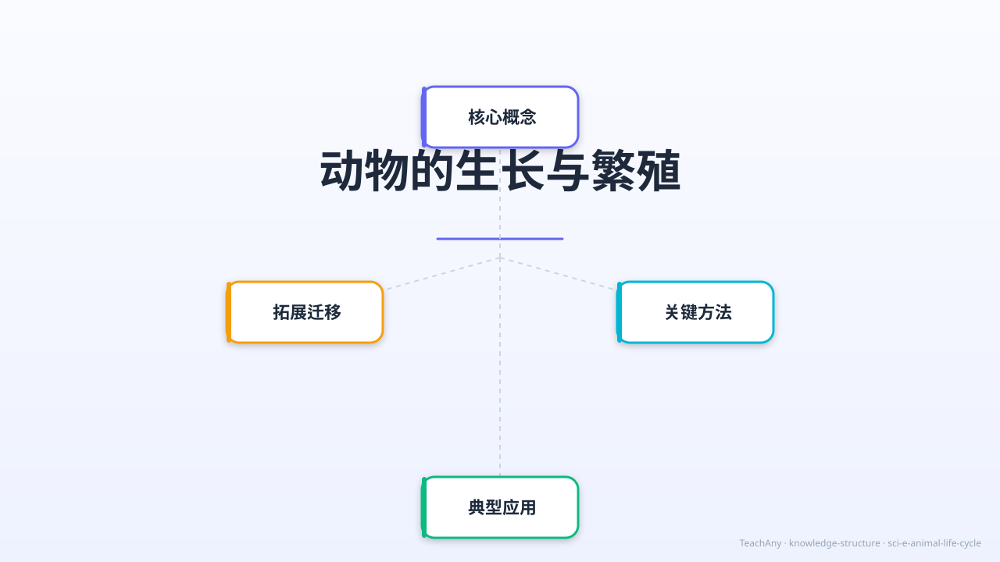

毛毛虫是怎么变成蝴蝶的？小猫咪和小鸡出生的方式一样吗？
一起来探索动物生命的奇妙旅程！

对应 2022 课标 · 小学科学 · 生命科学领域
区分卵生动物和胎生动物，说出各自的特征和代表动物
描述完全变态和不完全变态的四个/三个阶段，举出例子
说出青蛙从卵→蝌蚪→青蛙的变化过程，理解两栖动物
说出哺乳动物的特点：胎生、哺乳，了解亲代对幼崽的照顾
用故事开始今天的探索
小鸡是从鸡蛋里孵出来的，小猫是妈妈直接生出来的。动物世界里有很多不同的宝宝。
为什么毛毛虫和蝴蝶看起来完全不同，却是同一种动物？为什么蝌蚪有尾巴，长大后却变成了会跳的青蛙？
探索动物生长与繁殖的三大秘密：繁殖方式、变态发育、和青蛙的神奇一生！
5个场景 · 22秒 · 涵盖繁殖方式、变态发育、青蛙一生、哺乳动物四大主题
动物宝宝出生的两种方式
点击按钮切换分类视角 · 悬停查看动物信息
选择分类方式，查看不同动物在哪个类别。悬停在动物图标上查看详细信息。
完全变态发育：卵 → 幼虫 → 蛹 → 成虫，四个阶段缺一不可
卵→孑孓（幼虫）→蛹→蚊子
卵→若虫（小蟋蟀）→成虫，没有蛹这一步！
青蛙是两栖动物，幼年住水里，长大上陆地
青蛙妈妈在水中产卵，卵聚成一团
孵出小蝌蚪，有尾巴，用鳃呼吸，在水中游
先长出一对后腿，尾巴开始变短
再长出前腿，尾巴更短，开始上岸
尾巴消失，用肺和皮肤呼吸，水陆两栖！
把下面的阶段拖动到正确顺序，然后点击"检查"
胎生 + 哺乳，是哺乳动物的两大特点
怀孕约 63 天，一次生 3–6 只小猫。小猫出生时眼睛未开，要吃两个月的奶。
怀孕仅 30 天！小兔出生时没有毛，依靠妈妈的体温保暖和母乳成长。
孕期长达 22 个月，是陆地动物中最长的。小象出生就能站立行走，象群一起保护小象。
海豚是海洋哺乳动物，用肺呼吸，需要浮出水面换气。宝宝出生后妈妈会顶着它游到水面第一次呼吸。
点击选项作答，查看解析
把今天学到的装进记忆背包
卵生 vs 胎生
75% 动物是卵生
完全变态（4步）
不完全变态（3步）
青蛙：水→陆
卵生+不完全变态
胎生+哺乳
亲代照顾时间最长